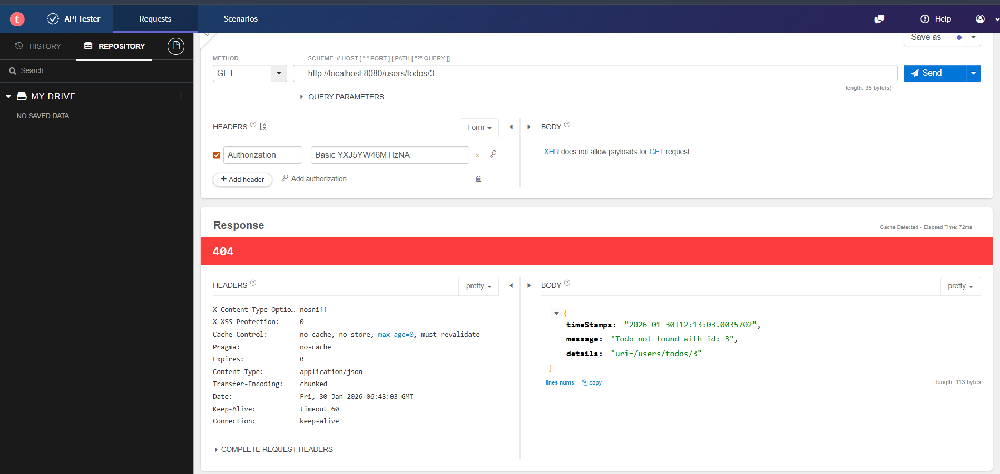
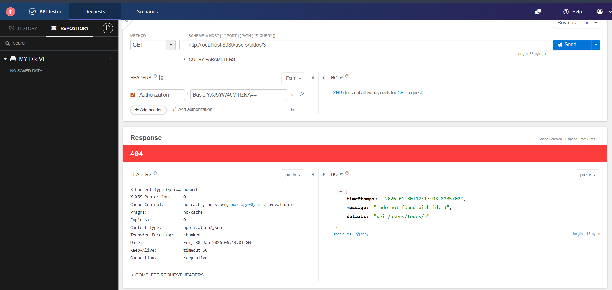

Spring Boot To‑Do Management Application
Hybrid backend (JSP MVC + JSON REST) • Production-ready patterns • Secure & tested
Java
Spring Boot


 

Designed and implemented a hybrid backend that exposes the same To-Do domain through both a JSP-based MVC UI and a JSON REST API, demonstrating separation of concerns and reusability of business logic.
- REST API: Full CRUD with correct HTTP verbs and ResponseEntity wrappers.
- Validation & Errors: @Valid DTOs, centralized @ControllerAdvice returning structured JSON error payloads.
- Persistence: Spring Data JPA + Hibernate; H2 for local dev, MySQL config (Docker-ready) for production.
- Security: Spring Security with BCrypt, in-memory demo users and role-based access control.
- Dev Experience: data.sql for bootstrapped demo data; profiles for quick dev ↔ prod switch.
Featured Projects
Amazon Clone
Frontend-only (JS + Bootstrap). Product listing, cart, checkout flow.
Game
Small browser game — playful demo to show interactivity.
Tech Stack
Spring Boot
Spring Security
JPA / Hibernate
JSP
Bootstrap
MySQL / H2
Docker
Some Advance Rest Api Features
Contact
I'm open to internships and backend/frontend roles.
About Me
I’m a Full Stack Developer passionate about building clean, scalable applications with Java + Spring Boot on the backend and modern JavaScript on the frontend. My backend journey focuses on production-ready patterns: layered architecture, DTOs, validation, and secure APIs. Seeking an opportunity to contribute to real-world projects, enhance technical expertise, and grow in a collaborative team environment.
Let's build something together
Email me with opportunities, or link me to a test / assignment and I’ll respond quickly.